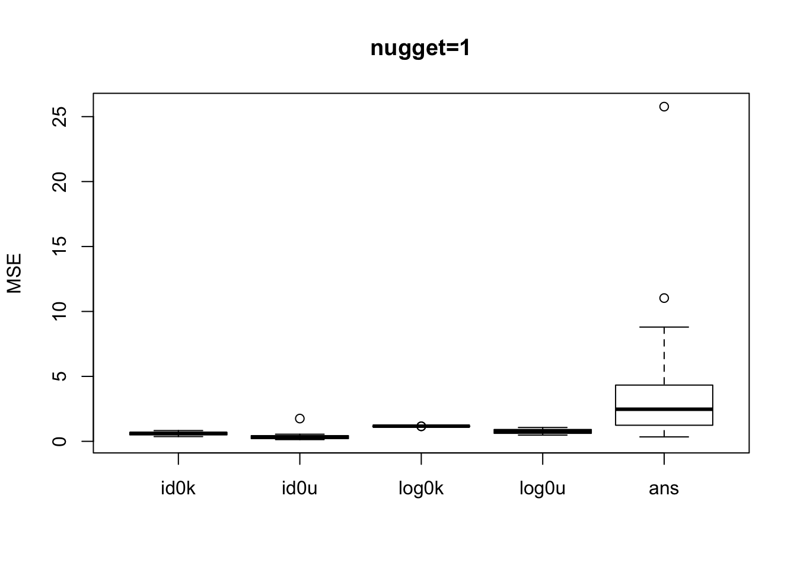
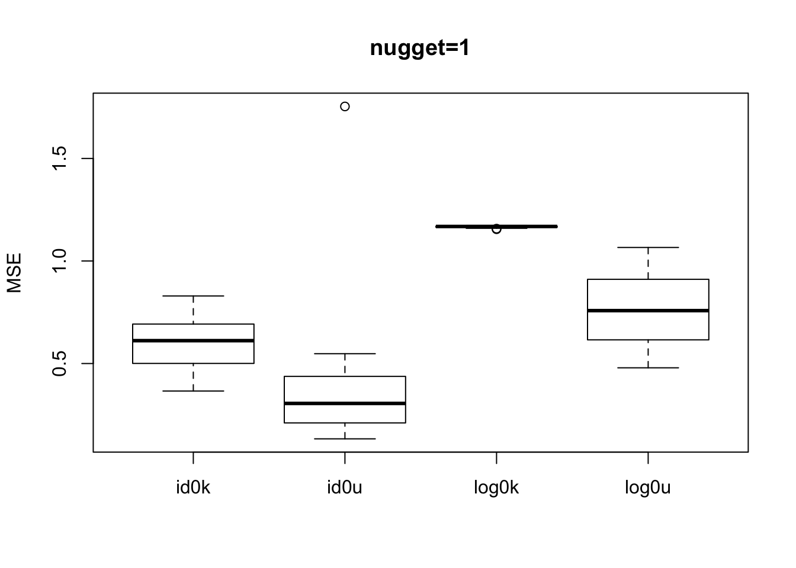
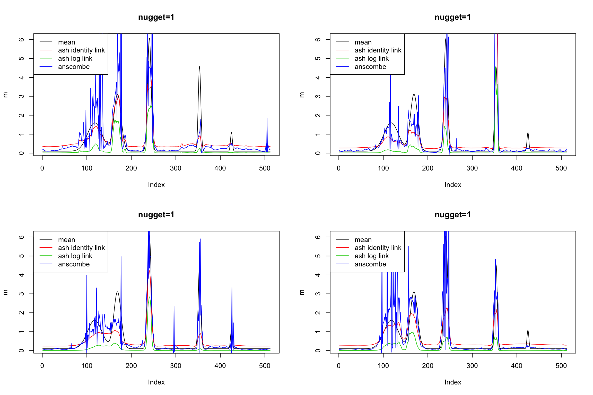
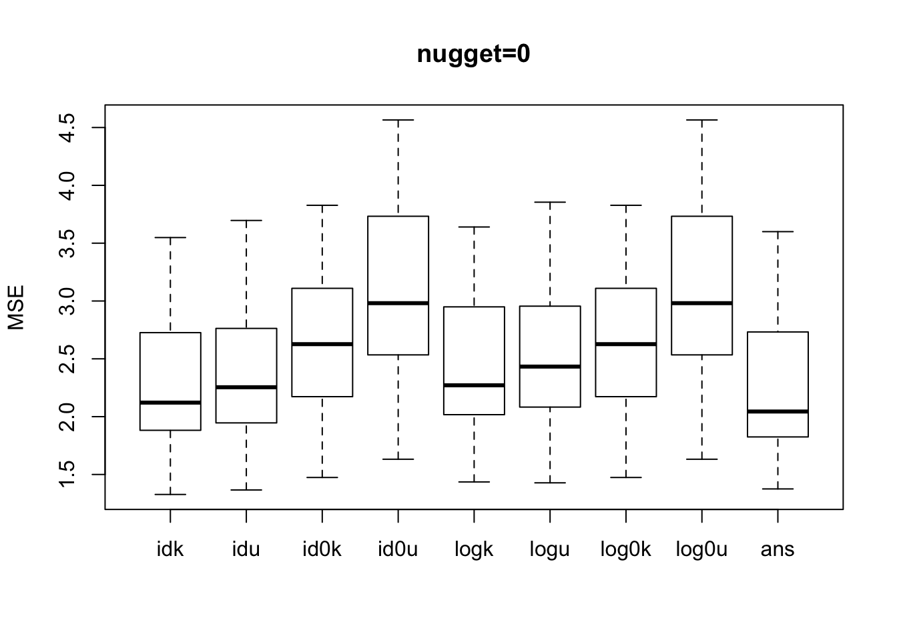

Compare smashgen and anscombe transform
Dongyue Xie
2018-10-13
Last updated: 2018-10-18
workflowr checks: (Click a bullet for more information)-
✔ R Markdown file: up-to-date
Great! Since the R Markdown file has been committed to the Git repository, you know the exact version of the code that produced these results.
-
✔ Environment: empty
Great job! The global environment was empty. Objects defined in the global environment can affect the analysis in your R Markdown file in unknown ways. For reproduciblity it’s best to always run the code in an empty environment.
-
✔ Seed:
set.seed(20180501)The command
set.seed(20180501)was run prior to running the code in the R Markdown file. Setting a seed ensures that any results that rely on randomness, e.g. subsampling or permutations, are reproducible. -
✔ Session information: recorded
Great job! Recording the operating system, R version, and package versions is critical for reproducibility.
-
Great! You are using Git for version control. Tracking code development and connecting the code version to the results is critical for reproducibility. The version displayed above was the version of the Git repository at the time these results were generated.✔ Repository version: 8407596
Note that you need to be careful to ensure that all relevant files for the analysis have been committed to Git prior to generating the results (you can usewflow_publishorwflow_git_commit). workflowr only checks the R Markdown file, but you know if there are other scripts or data files that it depends on. Below is the status of the Git repository when the results were generated:
Note that any generated files, e.g. HTML, png, CSS, etc., are not included in this status report because it is ok for generated content to have uncommitted changes.Ignored files: Ignored: .DS_Store Ignored: .Rhistory Ignored: .Rproj.user/ Ignored: analysis/figure/ Ignored: data/.DS_Store Untracked files: Untracked: analysis/chipexoeg.Rmd Untracked: analysis/talk1011.Rmd Untracked: data/chipexo_examples/ Untracked: data/chipseq_examples/ Untracked: talk.Rmd Untracked: talk.pdf Unstaged changes: Modified: analysis/literature.Rmd Modified: analysis/sigma.Rmd
Expand here to see past versions:
Introduction
Compare 1. smashgen-ash.identity 2. smashgen-ash.log 3. smashgen-ash.identity.zero 4. smashgen-ash.log.zero (known and unknown nugget effect) with smash-anscombe.
Settings: spike mean function, mean function range (0.1,6) and (20,50)
Note:
- idk: expand around ash posterior mean using identity link in lik_pois; given nugget effect(use
sigma=sqrt(nugget^2+s^2)insmash.gaus). - idu: same as 1; unknown nugget effect(use
sigma=NULLinsmash.gaus). - id0k: expand around ash posterior mean using identity link only for 0 \(x\)s and around \(x\) for nonzero \(x\)s; given nugget effect.
- id0u: same as 3; unkown nugget effect
- logk: expand around ash posterior mean using log link in lik_pois; given nugget effect
- logu: same as 5; unkown nuggect effect
- log0k: expand around ash posterior mean using log link only for 0 \(x\)s and around \(x\) for nonzero \(x\)s; given nugget effect.
- logu: same as 7; unkown nugget effect
- ans: use anscombe transormation on poisson data, variance around 1/4; use 0 variance for 0 \(x\)s.
vst_smooth=function(x,method,ep=1e-5){
n=length(x)
if(method=='sr'){
x.t=sqrt(x)
x.var=rep(1/4,n)
x.var[x==0]=0
mu.hat=(smashr::smash.gaus(x.t,sigma=sqrt(x.var)))^2
}
if(method=='anscombe'){
x.t=sqrt(x+3/8)
x.var=rep(1/4,n)
x.var[x==0]=0
mu.hat=(smashr::smash.gaus(x.t,sigma=sqrt(x.var)))^2-3/8
}
if(method=='log'){
x.t=x
x.t[x==0]=ep
x.var=1/x.t
x.t=log(x.t)
mu.hat=exp(smashr::smash.gaus(x.t,sigma=sqrt(x.var)))
}
return(mu.hat)
}
smash_gen_all=function(x,sigma,method){
n=length(x)
if(method=='identity'){
x.ash=ash(rep(0,n),1,lik=lik_pois(x,link='identity'))$result$PosteriorMean
}
if(method=='log'){
x.ash=ash(rep(0,n),1,lik=lik_pois(x,link='log'))$result$PosteriorMean
}
if(method=='identity.zero'){
x.ash=ash(rep(0,n),1,lik=lik_pois(x,link='identity'))$result$PosteriorMean
x.ash[x!=0]=x[x!=0]
}
if(method=='log.zero'){
x.ash=ash(rep(0,n),1,lik=lik_pois(x,link='log'))$result$PosteriorMean
x.ash[x!=0]=x[x!=0]
}
y=log(x.ash)+(x-x.ash)/x.ash
s2=1/x.ash
mu.sigk=exp(smash.gaus(y,sigma=sqrt(sigma^2+s2)))
mu.sigu=exp(smash.gaus(y))
return(list(mu.sigk=mu.sigk,mu.sigu=mu.sigu))
}
simu_study=function(m,sigma=0,nsimu=100,seed=12345){
set.seed(12345)
idk=c()
idu=c()
id0k=c()
id0u=c()
logk=c()
logu=c()
log0k=c()
log0u=c()
ans=c()
for (i in 1:nsimu) {
lambda=exp(log(m)+rnorm(n,0,sigma))
x=rpois(n,lambda)
id=smash_gen_all(x,sigma,'identity')
id0=smash_gen_all(x,sigma,'identity.zero')
logg=smash_gen_all(x,sigma,'log')
log0=smash_gen_all(x,sigma,'log.zero')
idk=rbind(idk,id$mu.sigk)
idu=rbind(idu,id$mu.sigu)
id0k=rbind(id0k,id0$mu.sigk)
id0u=rbind(id0u,id0$mu.sigu)
logk=rbind(logk,logg$mu.sigk)
logu=rbind(logu,logg$mu.sigu)
log0k=rbind(log0k,log0$mu.sigk)
log0u=rbind(log0u,log0$mu.sigu)
ans=rbind(ans,vst_smooth(x,'anscombe'))
}
return(list(idk=idk,idu=idu,id0k=id0k,id0u=id0u,logk=logk,logu=logu,log0k=log0k,log0u=log0u,ans=ans))
}First we compare all the methods mentioned above using spike mean function whose mean range is around (0.1,6) so there are a number of zero counts in the sequence. This would be a challenge for smashgen since we are using log transformation.
library(ashr)
library(smashr)
spike.f = function(x) (0.75 * exp(-500 * (x - 0.23)^2) + 1.5 * exp(-2000 * (x - 0.33)^2) + 3 * exp(-8000 * (x - 0.47)^2) + 2.25 * exp(-16000 *
(x - 0.69)^2) + 0.5 * exp(-32000 * (x - 0.83)^2))
n = 512
t = 1:n/n
m = spike.f(t)
m=m*2+0.1
range(m)[1] 0.100000 6.076316result=simu_study(m,sigma=0,nsimu = 4)
mses=lapply(result, function(x){apply(x, 1, function(y){mean((y-m)^2)})})
unlist(lapply(mses, mean)) idk idu id0k id0u logk
5.369863e+02 2.095411e+02 2.827456e-01 1.419588e-01 3.213241e+47
logu log0k log0u ans
2.343187e+15 1.163829e+00 4.926503e-01 7.836854e-02 boxplot(mses[-c(1,2,5,6)],main='nugget=0',ylab='MSE')Expand here to see past versions of unnamed-chunk-2-1.png:
| Version | Author | Date |
|---|---|---|
| 2a5f8dd | Dongyue Xie | 2018-10-18 |
When there is no nugget effect, id0k, id0u, log0u have relatively smaller mean square error(mse) while anscombe transformation outperforms all smashgen methods and achieves smaller mse.
We plot the estimated mean function of id0u, log0u and ans for comparison. log0u seems to result in underestimations of mean function. id0u overestimates small means and underestimates large means. So when there are a number of zero observations, it’s very crucial to choose where to expand for 0 \(x\)s.
par(mfrow=c(2,2))
for (j in c(1,2,3,4)) {
plot(m,type='l',main='nugget=0')
lines(result$id0u[j,],col=2)
lines(result$log0u[j,],col=3)
lines(result$ans[j,],col=4)
legend('topleft',c('mean','ash identity link','ash log link','anscombe'),lty=c(1,1,1,1),col=c(1,2,3,4))
}
Expand here to see past versions of unnamed-chunk-3-1.png:
| Version | Author | Date |
|---|---|---|
| 2a5f8dd | Dongyue Xie | 2018-10-18 |
Now we increase nugget effect to \(\sigma=1\). Obviously, using anscombe transformation, we are estimating \(exp(\log(\mu)+N(0,\sigma^2))\) so its mse is large and gives spiky fit.
result=simu_study(m,sigma=1,nsimu = 4)
mses=lapply(result, function(x){apply(x, 1, function(y){mean((y-m)^2)})})
unlist(lapply(mses, mean)) idk idu id0k id0u logk
2.773795e+12 4.929459e+10 5.789335e-01 3.372019e-01 5.332768e+45
logu log0k log0u ans
6.281977e+09 1.168559e+00 6.925573e-01 1.955617e+00 boxplot(mses[-c(1,2,5,6)],main='nugget=1',ylab='MSE')
Expand here to see past versions of unnamed-chunk-4-1.png:
| Version | Author | Date |
|---|---|---|
| 2a5f8dd | Dongyue Xie | 2018-10-18 |
boxplot(mses[-c(1,2,5,6,9)],main='nugget=1',ylab='MSE')
Expand here to see past versions of unnamed-chunk-4-2.png:
| Version | Author | Date |
|---|---|---|
| 2a5f8dd | Dongyue Xie | 2018-10-18 |
par(mfrow=c(2,2))
for (j in c(1,2,3,4)) {
plot(m,type='l',main='nugget=1')
lines(result$id0u[j,],col=2)
lines(result$log0u[j,],col=3)
lines(result$ans[j,],col=4)
legend('topleft',c('mean','ash identity link','ash log link','anscombe'),lty=c(1,1,1,1),col=c(1,2,3,4))
}
Expand here to see past versions of unnamed-chunk-5-1.png:
| Version | Author | Date |
|---|---|---|
| 2a5f8dd | Dongyue Xie | 2018-10-18 |
How about a larger mean function? Increase the range to (20,50). Some observations from the plot: 1. Now, known nugget effect gives smaller mse than unkown ones(e.g idk\(<\)idu, id0k\(<\)id0u,…); 2. Using identity link in lik_pois is still better; 3. ans has smaller mse but from the plots below, idk, logk and ans give very similar estiamtions.
m=m*5+20
range(m)[1] 20.50000 50.38158result=simu_study(m,sigma=0,nsimu = 4)
mses=lapply(result, function(x){apply(x, 1, function(y){mean((y-m)^2)})})
unlist(lapply(mses, mean)) idk idu id0k id0u logk logu log0k log0u
2.903710 2.899550 3.317807 3.663308 3.054792 3.054326 3.317807 3.663308
ans
2.815178 boxplot(mses,main='nugget=0',ylab='MSE')
Expand here to see past versions of unnamed-chunk-6-1.png:
| Version | Author | Date |
|---|---|---|
| 2a5f8dd | Dongyue Xie | 2018-10-18 |
Plots compare idk, logk and ans:
par(mfrow=c(2,2))
for (j in c(1,2,3,4)) {
plot(m,type='l',main='nugget=0')
lines(result$idk[j,],col=2)
lines(result$logk[j,],col=3)
lines(result$ans[j,],col=4)
legend('topleft',c('mean','ash identity link','ash log link','anscombe'),lty=c(1,1,1,1),col=c(1,2,3,4))
}Expand here to see past versions of unnamed-chunk-7-1.png:
| Version | Author | Date |
|---|---|---|
| 2a5f8dd | Dongyue Xie | 2018-10-18 |
Summary
Maybe can develop a version of anscombe to deal with nugget effect? Also is nugget effect necessarily defined as \(exp(\log(\mu)+\sigma^2)\)?
Session information
sessionInfo()R version 3.5.1 (2018-07-02)
Platform: x86_64-apple-darwin15.6.0 (64-bit)
Running under: macOS High Sierra 10.13.6
Matrix products: default
BLAS: /Library/Frameworks/R.framework/Versions/3.5/Resources/lib/libRblas.0.dylib
LAPACK: /Library/Frameworks/R.framework/Versions/3.5/Resources/lib/libRlapack.dylib
locale:
[1] en_US.UTF-8/en_US.UTF-8/en_US.UTF-8/C/en_US.UTF-8/en_US.UTF-8
attached base packages:
[1] stats graphics grDevices utils datasets methods base
other attached packages:
[1] smashr_1.2-0 ashr_2.2-7
loaded via a namespace (and not attached):
[1] Rcpp_0.12.18 knitr_1.20 whisker_0.3-2
[4] magrittr_1.5 workflowr_1.1.1 REBayes_1.3
[7] MASS_7.3-50 pscl_1.5.2 doParallel_1.0.14
[10] SQUAREM_2017.10-1 lattice_0.20-35 foreach_1.4.4
[13] stringr_1.3.1 caTools_1.17.1.1 tools_3.5.1
[16] parallel_3.5.1 grid_3.5.1 data.table_1.11.6
[19] R.oo_1.22.0 git2r_0.23.0 htmltools_0.3.6
[22] iterators_1.0.10 assertthat_0.2.0 yaml_2.2.0
[25] rprojroot_1.3-2 digest_0.6.17 Matrix_1.2-14
[28] bitops_1.0-6 codetools_0.2-15 R.utils_2.7.0
[31] evaluate_0.11 rmarkdown_1.10 wavethresh_4.6.8
[34] stringi_1.2.4 compiler_3.5.1 Rmosek_8.0.69
[37] backports_1.1.2 R.methodsS3_1.7.1 truncnorm_1.0-8 This reproducible R Markdown analysis was created with workflowr 1.1.1